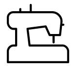

Sobre a marca
A Independência ou Corte é uma marca de costura, com diversos produtos. A motivação inicial da marca foi a vontade de criar as próprias roupas, adquirindo independência na moda.
Aqui o universo dos tecidos é desbravado com agulha e linha.
Blog
Confira as novidades no blog.

Continua